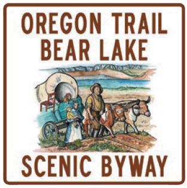

Bear Lake straddles the Idaho-Utah border and boasts sandy beaches,
great water sports, fishing, boating and the famous Bear Lake State
Park. This byway follows Bear Lake north on U.S. 89 to Montpelier,
then north on U.S. 30, where you leave the Cache National Forest
and enter the Caribou National Forest.
The intersection of U.S. 89
and U.S. 30 at Montpelier is the site of the attractive National
Oregon-California Trail Center dedicated to the history and scenic
wonders of the 2,000-mile Oregon-California Trail. There, you
can ride in computer-controlled covered wagons, journey nearby
trails with experienced guides in period costume, and handle the
tools and other artifacts used by the pioneers. There is also an
expansive park and playground to stretch your legs, as well as a
general store and gift shop to help you remember your visit.
There are 13 Oregon-California Trail sites identified in
the Soda Springs area. These sites are documented in diaries of
the emigrants, in military records, by early mountain men, and
settlers. "Travel the Oregon Trail in Caribou County" brochure
contains information and directions on each site. The Mormon
ghost town of Chesterfield lies 25 miles northwest of Soda Springs
and is located right on the Oregon-California Trail.